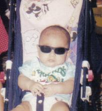
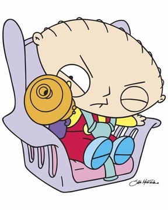

Bebé
 De: La Frikipedia, la enciclopedia extremadamente seria.
De: La Frikipedia, la enciclopedia extremadamente seria.
Un bebé es una versión muy pequeña y poco desarrollada (físicamente) de una persona común que fueron creados con el fin de atormentar a los adultos. En el 50 A.C, planearon destruir el planeta. Fieles seguidores de Adolf Hitler, y de la Televisión, son muy peligrosos.
Anatomía
Un bebé es una personita muy pequeña, que no sabe hablar, ni ir al baño a disposición; aunque su cerebro esta muy desarrollado (por eso son cabezones). Pero la televisión y la gente boba de hoy en día hace que su cerebro se achique. Son cachetones, para guardar alimentos, drogas o armas. Les encanta chupar y morder cosas, dado que no pueden morder, ni chupar ni comer a sus superiores (hoy en día: los padres). Se dice que viven como reyes, no tienen que ir al baño, la gente cree que eres hermoso, y chupas de una teta. Estan dotados de un sistema de guiado de pis justo cuando se les quita el pañal, que hace impactar la orina en la boca u ojos del esclavo que pretendía limpiarlos.
Los bebes captan el peligro
Un poco de historia
- Adán y Eva, desobedecieron a Dios. Merecían ser castigados. Dios creó una criatura muy pequeña, muy chillona y molesta: los bebés. Adán y Eva tuvieron que lidiar con estos, y vaya que les fue mal. Uno fue homosexual y el otro homicida.
- Hacia el 50 A.C , los bebes crearon una asociacion secreta, en la cual planeaban dominar al mundo. Eran muy inteligentes, pero la idiotez universal acabo con ellos. Esta era se llamó: "La era pequeña".
- Hoy en día, los bebes viven como reyes. La televisión y la estupidez acabó con su inteligencia. Los programas para niños, en especial, como Barney y los Teletubbies.
 Este es un bebé cool!!
Idioma
Si bien el idioma oficial de los bebes es el A gugu tata, la mayoría de los bebés empiezan a hablar cuanto tienen un año (excepto los bebes problemáticos y disléxicos que acaban siendo grandes filósofos o científicos). Los bebés pueden comunicarse entre sí y con sus superiores, o "padres" mediante otros métodos:
- Llanto: Cuando un bebé llora, es por que necesita algo. El sensor lloratorio lagrimal se enciende causando que caigan lágrimas. Cada cosa que el bebé tiene es reconocida por su Baby-Chip, que se encuentra en el cerebro. Por ejemplo, si a un bebé le sacas su peluche, y llora es porque puede tener su ADN (creen que corren peligro) o puede tener una bomba.
- Sonrisas: Fácil, cuando un bebe ve a alguien y se ríe es porque esta diciendo: "Ja, ja, mira que idiota", "Que cara de inútil", "Soy mejor que tú" o "Suerte que no soy así...", etc.
- Baba: Hubo un cortocircuito en su cabeza. No importa, se recuperan pronto. Si babea mucho es porque es simplemente un bobo.
Tipos de bebé
- Chupa-Dedos: Succionan los germenes de su dedo. Se alimentan muchas veces de estos y es probable que le guste mucho la leche. Se cree que se alimentan poco a causa de estos. ¡Si su bebé no para de chuparse el dedo hasta mas de los 5 años, tenemos un problema amigo!
- Noctámbulo: ...Tienes un hijo vampiro.
- El dormilón: Generan energía constantemente. ¡La gastarán en algo, amigo!
- El Cabrón: Pareciera que les gusta tu desgracia, te despierta a las 4 de la mañana justo el día antes de esa importante reunión, nunca los dejes solos con un plato de comida en una habitación blanca.
 Nunca le des un arma a un bebe
Edades
- Recién nacidos: Son muy pequeños, no hacen casi nada, solo lloran , duermen, se alimentan y defecan. Ya se van a acostumbrar, pero es difícil: imagínate estar super cómodo en una bolsa con agüita caliente sin ningún problema, ¡y salir a un mundo frío con una mujer gritando y un doctor loco que corta tu hilito mágico de la panza!
- Intermedios: La edad de Oro. Te tratan como a un dios, amigo. Tienes todas las comodidades y... ya estas grande para ver la televisión y arruinar tu vida!
- Inteligentes: ¡Wow! ¡Puedo andar en dos patas! Oh, y los viejos tiempos, cuando gateaba junto al perro se han ido. También ya se hablar! Aunque solo me entienden mis padres. Y, si, puedo ir al baño solo. Aunque mojo y cago la cama.
- Superdotados: NO ESE DOTE, MAL PENSADO, soy más inteligente que mi padre, y diria que más limpio, soy capaz de leer e insultarte con aun más groserias que un loro. Ni se te ocurra dejarme rodeado de tecnologia, por que los daños serian gigantescos.
- Mayores de edad: Ya tienes dos años. No eres uno de ellos. Preparate para el Jardin de Infantes y tu "maravillosa" infancia.
- Traumado: Tengo 3 años y aun gateo junto al perro, mi papá fue a comprar cigarros a la esquina hace 1 año, pero creo que volverá pronto. Mi mamá es pobre, apenas se viste para ir a trabajar. Y yo todavía me defeco, pero creo que soy normal.
Ver también
Autor(es):
- Fordus
- Frikiman
- Epikurolibre
- Roms
- Kamilah
- D.K.
- Fallen Angel
- Cibercrank
- Bt
- Veni Vidi Vici
Frikipedia 2005-2016, Licencia
GFDL 1.2 - Extraído por FrikiLeaks